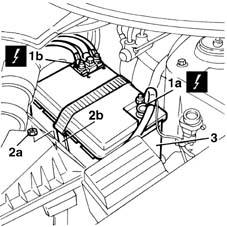

5530B10 battery - r+r
- Path
- Procedures > 55 ELECTRICAL EQUIPMENT > 5530 CURRENT GENERATOR > 5530B battery and leads > 5530B10 battery - r+r
- Kind
- repair procedure (removal / refitting; the operation number is the code)
- Applies to
- all engines; all production periods
- Interactive page
- https://sloeber94.github.io/elrnDB-fMltpl/en/#/2891911
Applies to: all engines; all production periods
 Removing
Removing
 Refitting
Refitting1. With the ignition key in the OFF position, disconnect the negative battery terminal (1a) and the positive battery terminal (1b).
 | Name | Connector |
|---|---|---|
1a | Battery |
| Name | Connector |
|---|---|---|
1b | Battery |
2. Undo the nut (2a) fixing the retaining bracket (2b).
3. Release the battery from the retaining bracket and remove it.

Applies to: all engines; all production periods
Refitting
RemovingCheck the condition and the efficiency of the battery.
Position the battery on the drip tray.
Position the retaining bracket and tighten the fixing nut.
 | Fastening | Component | Ø | Value (daNm) |
|---|---|---|---|---|
- | Bolt | BATTERY SUPPORT BRACKET | M6 | 1.4 |
Connect the negative and positive battery poles.
Tighten the nuts fixing the poles to the battery to the recommended torque.
| Fastening | Component | Ø | Value (daNm) |
|---|---|---|---|---|
- | Nut | BATTERY POLES | M6 | 0.4 |
Close the bonnet lid.
Check the operation of the electrical system.
Topics linked from this page (2)
Topics that link to this page (58)
- B01 IGNITION SWITCH NOT WORKING
- 1004B10 power unit with manual gearbox - r + r
- 1004B12 power unit with manual gearbox - r+r for versions with a/c
- 1016C11 single cylinder head-r r gasket for versions with air conditioner
- 1020D26 flywheel side oil seal cover - r+r
- 1020D38 flywheel side oil seal - replace
- 1024B10 engine flywheel - r + r for versions with manual gearbox
- 1028H11 piston connecting rod set - r r
- 1060F30 fuel delivery manifold - r r
- 1060F36 lines to injectors - r r
- 1060G14 engine coolant temperature sensor - r r
- 1060G50 Electro-pneumatically controlled THROTTLE CASING - R.R.
- 1060G90 diesel injection wiring harness - r r
- 1072B10 inlet manifold - r + r and replace seal
- 1080D10 pipe carrying engine oil vapours from intake to separator - r + r
- 1080D14 pipe from engine oil vapour separator to intake - r + r
- 1080D30 engine oil recovery pipe - r + r
- 1080D34 engine oil vapour separator - r + r
- 1088D24 rigid pipe for coolant inlet to water pump - r + r
- 1810A20 clutch - r + r
- 1820A24 thrust bearing linkage - r + r
- 1280B30 OPERATING CYLINDER/CLUTCH HYDRAULIC ACTUATOR - R.R.
- 1280B45 RIGID supply PIPE from (pump) - master cylinder R.R. for right hand drive versions
- 2110A10 manual gearbox and differential - r + r
- 2125C30 gear engagement cable - r r
- 2710A34 intermediate drive shaft bearing support - r + r with intermediate drive shaft removed for versions with air conditioner
- 2710A35 intermediate drive shaft mount - r r
- 3330C10 (PUMP) - MASTER CYLINDER R.R.
- 3330C14 (PUMP) - MASTER CYLINDER .R.R for versions with A.B.S.
- 3330D10 brake servo - r+r - includes separation from master cylinder (pump)
- 3330D14 brake servo - r+r for versions with abs - includes separation from master cylinder (pump)
- 3330D22 intermediate one-way valve for brake servo - r r
- 3340A12 A'B.S. system. - electronic and hydraulic CONTROL UNIT R.R.
- 3340A13 abs central mount - r r
- 3340A32 front wheel rpm sensors (two) - r r
- 3340A48 wheel rpm sensors (four) - r r
- 3340B62 rear connection central pipe - r r
- 4130B21 power steering pump r r with interfering parts removed
- 4130B24 power steering pump r r for versions with air conditioner
- 4130B34 supply pipe from fluid resevior to power steering pump r r
- 5010A12 engine/heater line - r r
- 5010A16 heater/engine line - r r
- 5020A10 heater box - r+r
- 5020A12 HEATER CASING - R+R WITH FACIA REMOVED
- 5040A44 air conditioner dehydrating filter/accumulator - r+r
- 5040A52 pipe from condenser to dehydrating filter - r+r
- 5040A54 pipe from dehydrating filter to expansion valve - r+r
- 5040A58 pipe from expansion valve to compressor - r+r
- 5040B30 expansion valve (tube orifice) - r+r
- 5040B64 sensor on evaporator for a/c ecu - r + r
- 5040C10 air conditioner box - r+r
- 5040C12 air conditioner housing - r r with facia disconnected
- 5040C64 a/c evaporator - r+r
- 5520C10 glow plugs - r+r
- 5530A14 alternator - r+r for versions with air conditioner
- 5530B26 lead between battery and starter motor - r+r
- 5530B52 Battery DRIP TRAY/SUPPORT - R.R.
- 7025A28 bonnet lid opening cable - r r